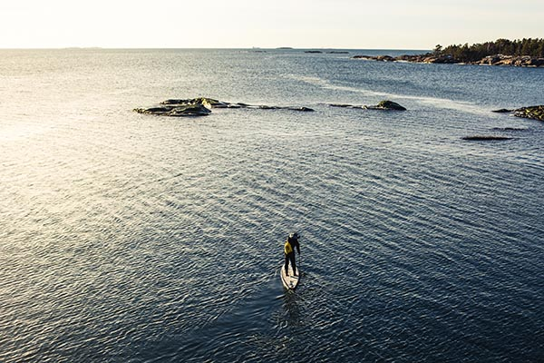
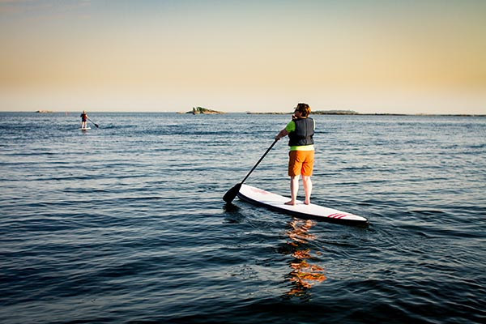
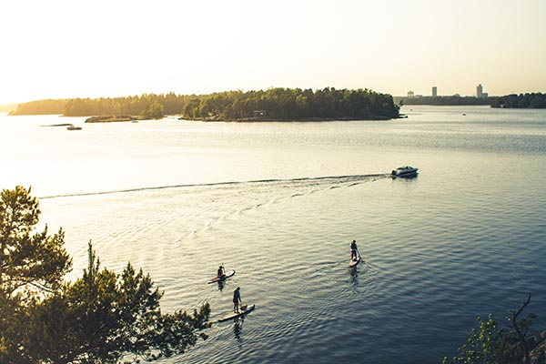

KAUDEN 2015 RETKET
Heips! Julkaisemme kauden 2015 retkiä pian, stay tuned :)
Aikaisempien kesien retki fiiliksiä voit käydä katsastamassa Facebook-sivuiltamme. Ilmoitamme myös uutiskirjeessämme kauden ensimmäisistä retkistä:

Porkkalan ulkosaaristoa 15.02.2015

Villingin SUP-melonta retki kesällä 2013.

Retki käärmeluodoille kesällä 2014.
RETKIEN VAATIVUUS
Tulemme auttaamaan sinua arvioimaan omaa melonta tasoasi ja siten valitsemaan juuri sinulle sopivan retken!
Lisää sisältöä tulossa pian. Pirautathan tai lähetät sähköpostia mikäli herää kysyttävää:
+358 44 7688464 tai info@twentyknots.fi
MELONTA REITTEJÄ
Tulemme esittelemään mielenkiintoisia melonta reittejä Etelä-Suomessa.
Lisää sisältöä on tulossa pian. Pistäppä viestiä jos tiedät hauskasta melonta reitistä.:
info@twentyknots.fi